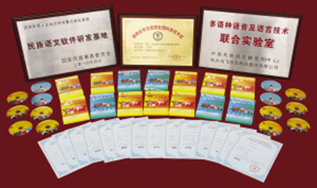

与时俱进，民族语文翻译的信息化革命
2015年12月11日 来源：《中国民族报》

翻译局信息化建设项目成果
在信息化、大数据时代，民族语言的翻译也离不开数据库的建设和信息化操作平台。中国民族语文翻译局与时俱进，大胆创新，使民族语文翻译日益告别卷帙浩繁的纸笔年代，跨入轻便快捷的电子化时代。
为推进少数民族语言文字标准化、规范化和信息化建设，中国民族语文翻译局依托“全国少数民族语文翻译共享系统项目”和“全国少数民族语文术语监测与校对系统项目”，做了大量卓有成效的工作：一是民族语文翻译平行语料库建设；二是应用型民族语文辅助翻译软件的研发；三是建立民族语文翻译信息发布和传播平台。
“基础不牢，地动山摇。要实现民族语文翻译信息化，必须有大量的民族语文翻译语料数据作支撑。”中国民族语文翻译局信息处处长旺堆说，民族语文翻译信息化建设的基础性工作就是语料数据库建设。
从2010年开始，中国民族语文翻译局每年投入一定的项目经费，用于汉语与蒙古、藏、维吾尔、哈萨克、朝鲜、彝、壮等7种少数民族语文平行语料库建设，将翻译局建局以来翻译的党和国家的重要文献（汉文和少数民族文文献）全部电子化，并在此基础上每年逐步扩充和完善。
为了把有限的研发资金用在刀刃上，翻译局整合资源，主要依靠本单位科研技术人员及7个文室的翻译专家共同合作，现已收集、整理、审定翻译局建局以来翻译出版的电子化汉文与7种民族文对照文献数据，总计2074册图书，约17851万字，初步建立起了一个较全面、系统的汉文与7种民族语文翻译文献对照的平行语料库。
目前，这一平行语料库已广泛运用于民族语文翻译实践。在全国“两会”文件和诸如《习近平谈治国理政》等重大文献著作的翻译过程中，依托平行语料库的查询系统，可以及时、便捷地查询相关译文和译词语料等。
“以前为全国‘两会’等重大会议翻译，翻译人员都需要携带大量的书面资料，遇到不确定的词汇，还要手动查找资料，浪费时间，也做不到统一性。”旺堆说，为减轻翻译人员的劳动强度，提高工作效率，优化译文质量，信息处近年来着力研发直接运用于翻译实践的民族文辅助翻译软件。
在长期积累的研发民族文软件经验的基础上，经过近5年的技术攻关，先后完成7种民族文电子词典及辅助翻译软件、校对软件、编码转换软件等22款应用型软件的研发，并获得国家版权局颁发的《计算机软件著作权登记证书》。其中两款软件，还获得了2012年度中国中文信息学会“钱伟长中文信息处理科学技术奖”二等奖。
2012年和2013年，国家民委先后两次在北京举行“民族语文电子词典及辅助翻译软件成果发布会暨赠送仪式”，将8款民族语文辅助翻译软件产品赠送给民族地区，以支持民族地区翻译事业的发展。这些软件经民族地区使用后，取得了良好的反响。2014年，中国民族语文翻译局被正式确定为“国家民委民族语文软件研发基地”。
说到翻译局信息化的最新成果，则要属从2015年初投入100多万元启动的民族语文智能翻译系统研发。这套软件旨在建立国内首套汉文与蒙古、藏、维吾尔、哈萨克、朝鲜5种民族语文双向智能翻译系统。目前，这项技术已取得突破性进展，一套能在手机上使用的维汉智能语音翻译软件已成功问世。
“只要用维吾尔语说出‘北京是祖国的首都’，手机上就会立刻出现维吾尔文和汉文版的‘北京是祖国的首都’。同时，软件会用汉语读出这句话。同样，用汉语说一句话，手机会用维吾尔语来发音，并用维吾尔文和汉文显示。”旺堆说，这套软件利用语音合成和识别技术，实现了维、汉双语的语音输入、朗读及互相翻译功能。